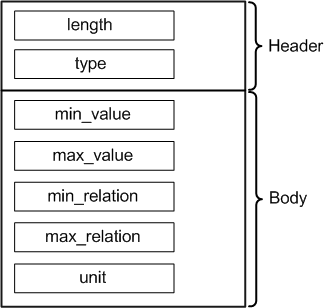

PassRangeAttrType
Contains the definition of a pass range with limits and the unit. The data type is DRLPassRangeAttr.

Field Name |
Data Type |
Description |
Comments |
|---|---|---|---|
length |
int |
Attribute length |
These fields form the attribute header. |
type |
short |
Attribute type |
|
min_value |
double |
Minimum value |
|
max_value |
double |
Maximum value |
|
min_relation |
char |
Relational operator for the minimum value. Example: 0 ≤ X < 7: ≤ is the relational operator for the minimum value Operators are represented by numeric codes:
|
|
max_relation |
char |
Relational operator for the maximum value. Example: 0 ≤ X < 7: < is the relational operator for the maximum value Operators are represented by numeric values:
|
|
unit |
string |
Unit |
|
Note You can specify any derived unit (such as ns or mA) for EDL data
logging. However, when data logs are converted to STDF, all units are converted to their SI
equivalents (ns to s, mA to A) and the corresponding values are converted accordingly. (For
example, 435 mA is converted to 0.435 A.)
Functional changes
- Introduced before SmarTest 6.3.2